Unámonos para reutilizar, reciclar y construir un municipio más limpio y sostenible.
Aprende a reciclarEcoMaicao es una iniciativa socioambiental impulsada en el municipio de Maicao con el compromiso de transformar la gestión de los residuos sólidos. Buscamos promover hábitos de reutilización, educar sobre la correcta separación en la fuente y generar un impacto positivo en nuestro entorno comunitario.
Talleres y guías accesibles para sensibilizar a vecinos y familias sobre el valor de reciclar.
Soluciones creativas para darle una segunda vida útil al plástico, cartón y vidrio antes de desecharlo.
Unión de fuerzas entre jóvenes, estudiantes y líderes locales para mantener un Maicao más limpio.
Separa adecuadamente tus residuos en Maicao y ayuda al medio ambiente.
Asegúrate de que estén limpios y secos. Pliégalos para optimizar espacio antes de entregarlos.
Ver guía rápida →Lava las botellas de plástico, retira las tapas y compáctalas para facilitar su procesamiento.
Ver guía rápida →Aprovecha los restos de frutas y verduras para elaborar compost o abono para plantas.
Ver guía rápida →Descubre cuánto aportas al planeta calculando el impacto de tus hábitos de reciclaje.
💧 Agua ahorrada: 0 Litros
🌍 CO₂ evitado: 0 kg
Encuentra el punto o parque más cercano a tu barrio para llevar tus residuos reciclables limpios y separados.
📍 Sector Centro de Maicao
¿Cómo entregar?: Lava y aplasta las botellas plásticas para reducir su espacio antes de depositarlas.
📍 Cra. 11 con Cl. 20 - Sector Sagrado Corazón
¿Cómo entregar?: Asegúrate de que las cajas estén secas y desarmadas para optimizar el contenedor.
📍 Cl. 16 con Cra. 15 - Sector Boscán
¿Cómo entregar?: Enjuaga bien los envases de vidrio y plástico antes de depositarlos.
📍 Zona Comercial de Maicao
¿Cómo entregar?: Ideal para comerciantes. Entrega las tiras de plástico limpias y el cartón atado en bultos.
Cargando dato curioso...
Dale una segunda vida a los materiales con estos tutoriales paso a paso.
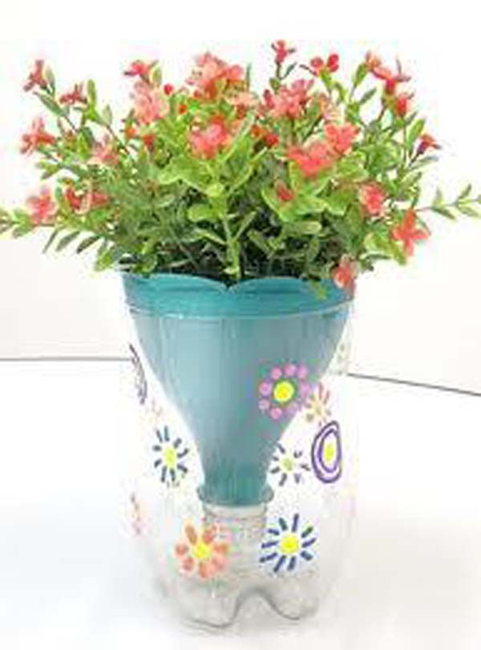
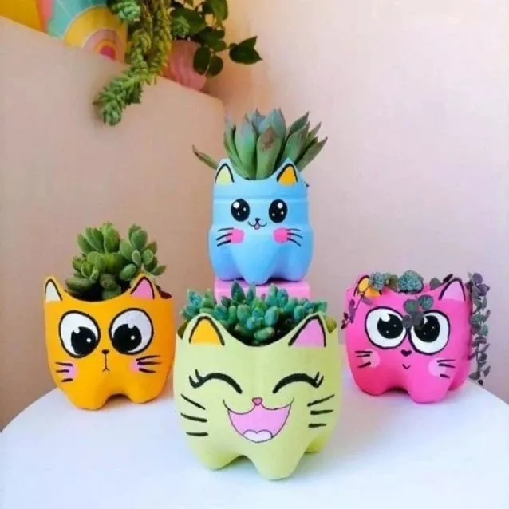
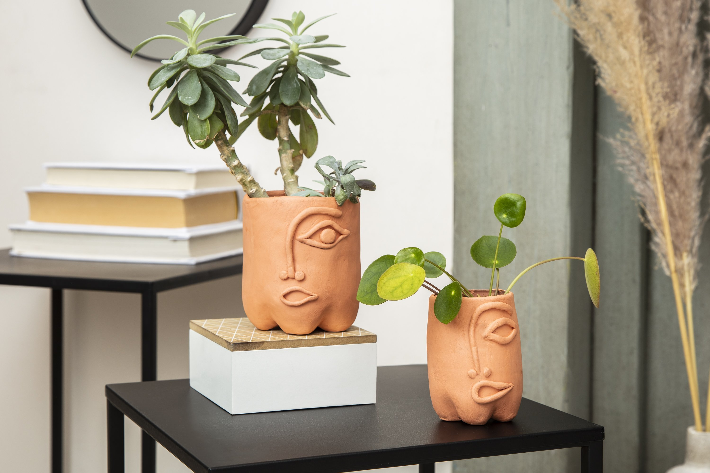
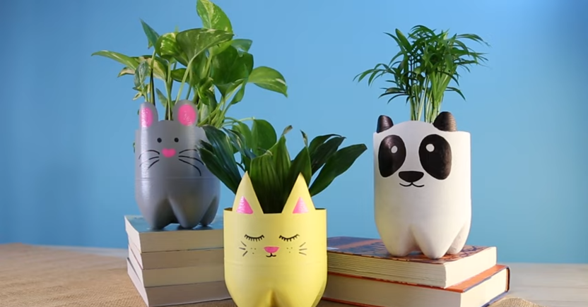
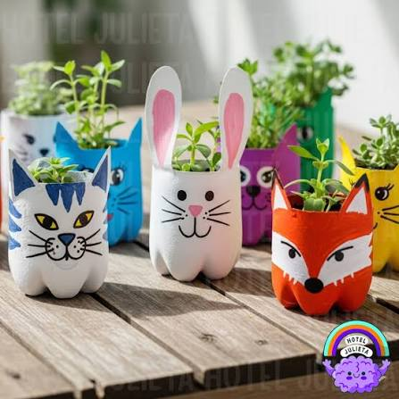
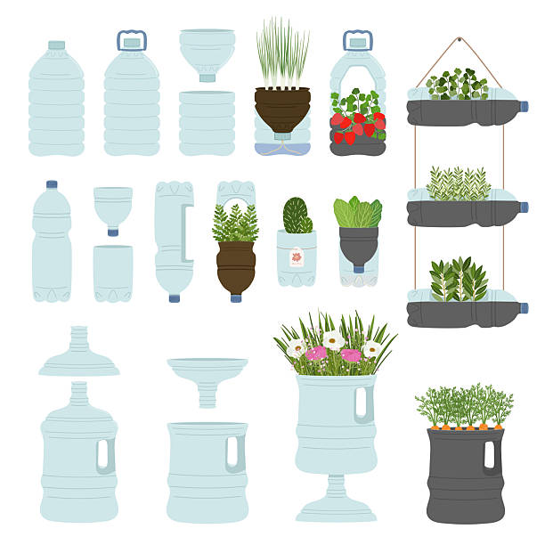
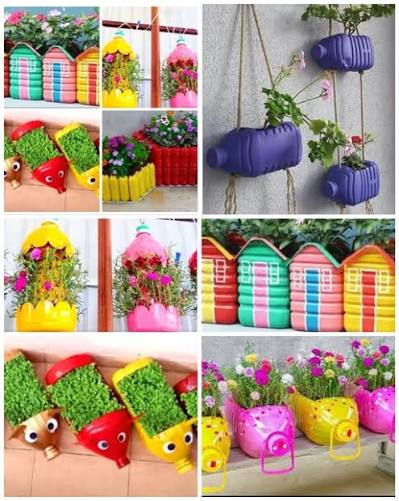
Transforma botellas plásticas en coloridas macetas colgantes y jardines verticales.
Ver Tutorial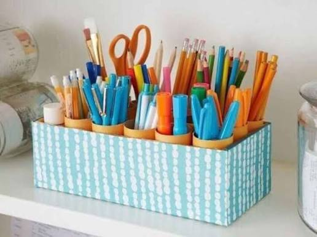
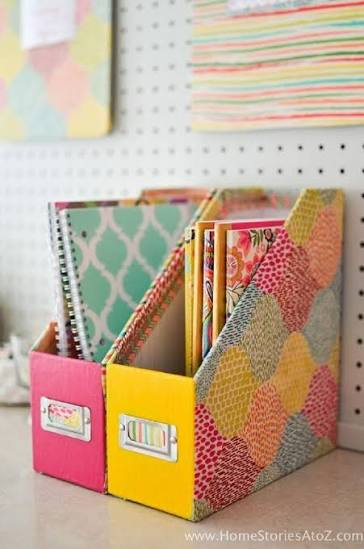
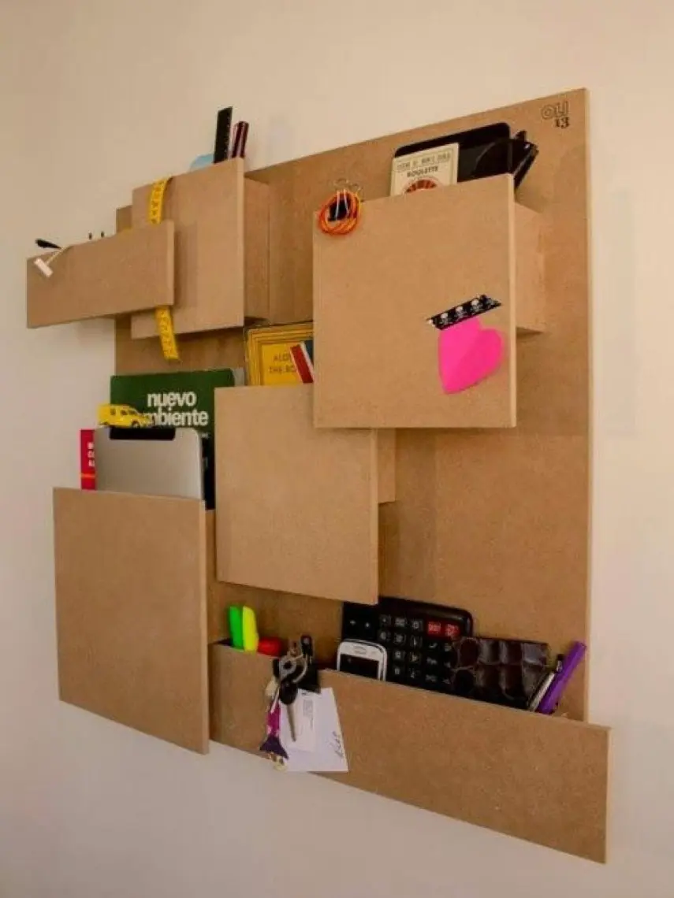
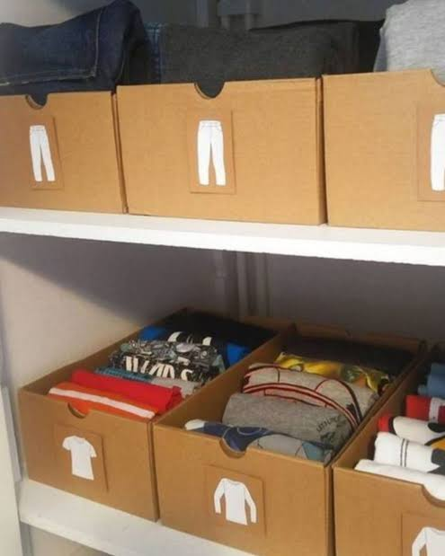
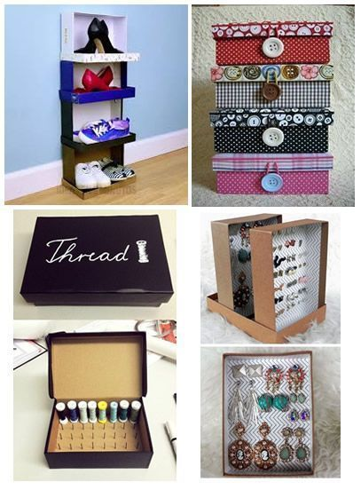
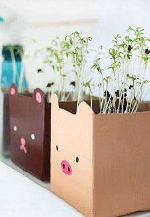
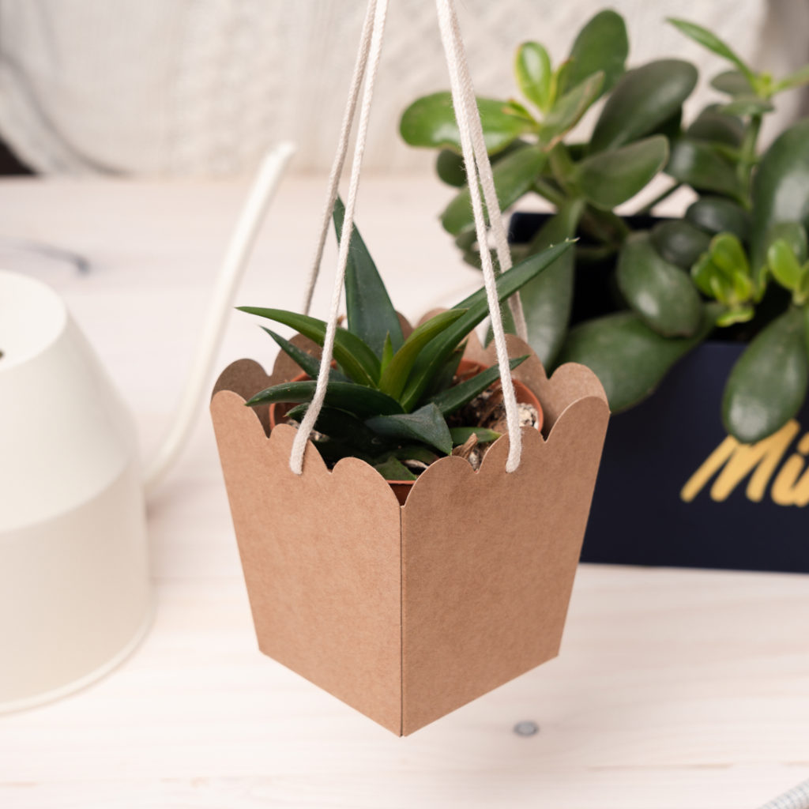
Aprovecha las cajas de cartón para crear cajoneras, portapapeles y estantes útiles.
Ver Tutorial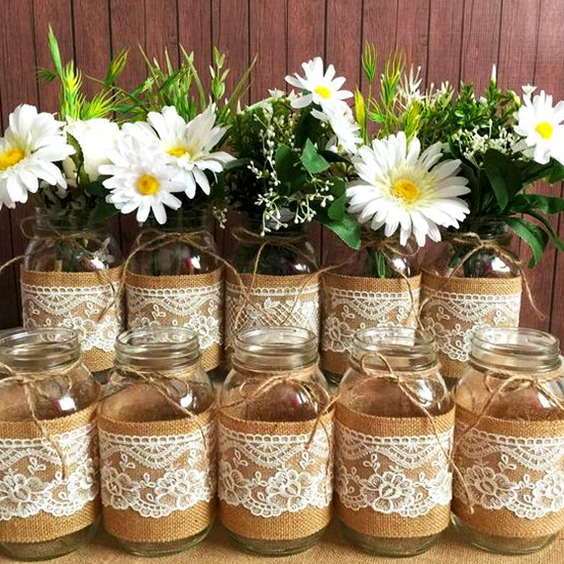
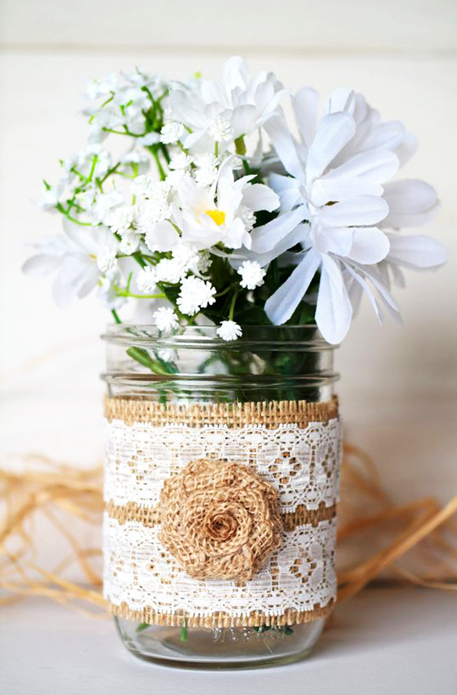
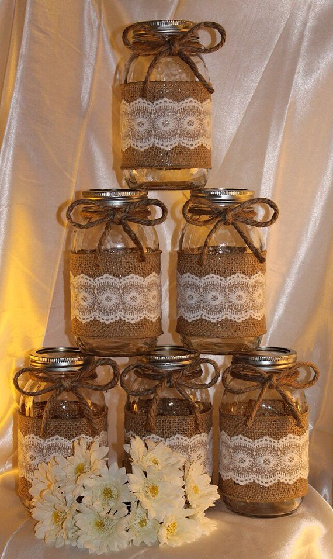
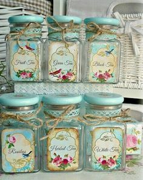
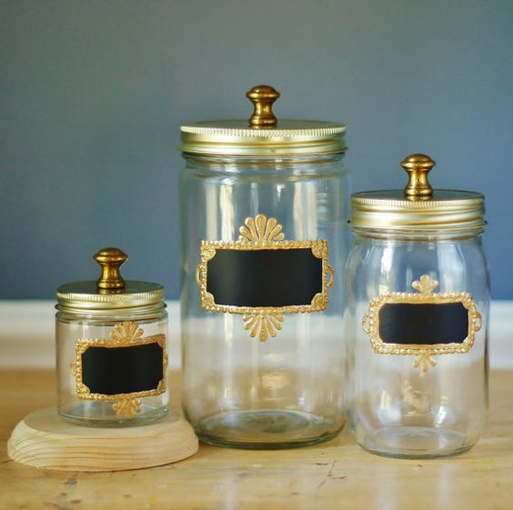
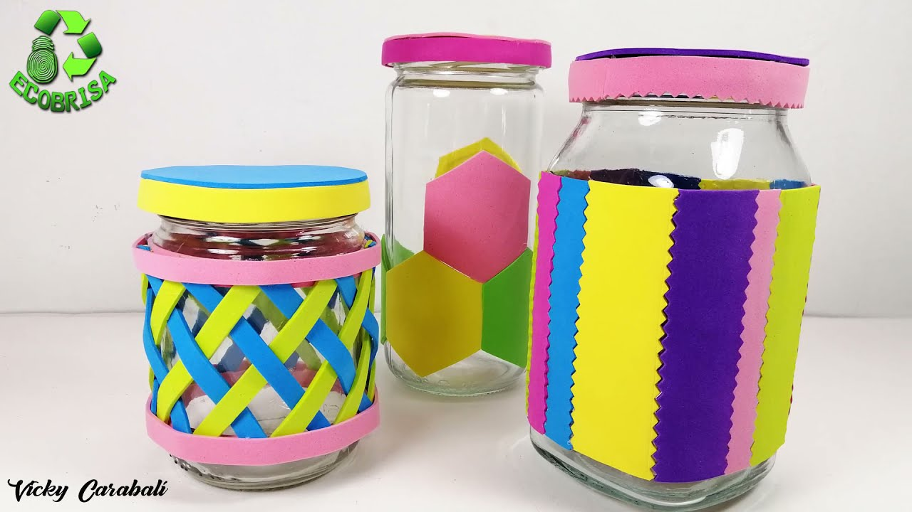
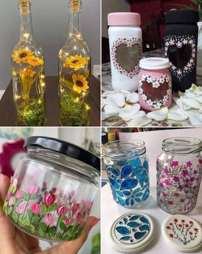
Reutiliza frascos de vidrio para hacer portavelas decorativos o contenedores elegantes.
Ver Tutorial¿Tienes sugerencias, ideas de reutilización o quieres aportar al proyecto? Contáctanos directamente.